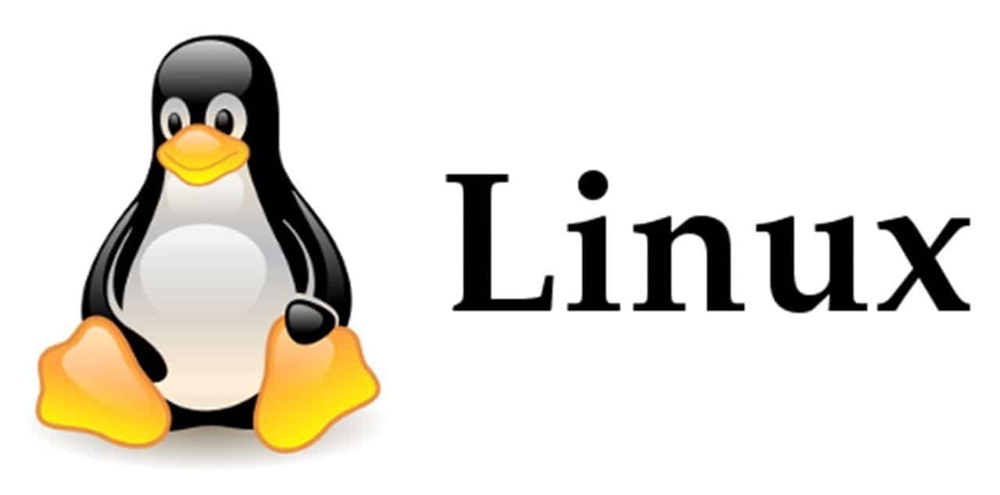
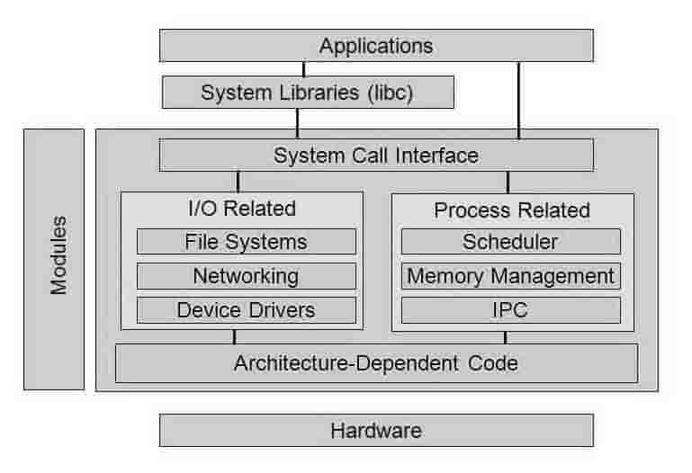

ОС семейства Linux
 Tux - маскот LinuxLinux - операционная система, созданная в октябре 1991 года студентом университета Хельсинки Линусом Торвальдсом. Linux - это общее название Unix-подобных операционных систем, основанных на одноимённом ядре. В нем реализована поддержка многозадачности, многопользовательского режима, управления устройствами, памятью и выполнением приложений. Операционная система - программное обеспечение, которое управляет всеми аппаратными ресурсами, связанными с настольным компьютером или ноутбуком. Проще говоря - операционная система управляет связью между программным обеспечением и оборудованием. Без операционной системы программное обеспечение не будет функционировать. Операционные системы на основе ядра Linux с использованием большой части приложений проекта GNU называют «Linux» или «GNU/Linux»
В 1991 году во время обучения в Хельсинкском университете Линус Торвальдс заинтересовался операционными системами[19] и был разочарован лицензией MINIX, которая ограничивала её использование только образовательными целями (что исключало любое коммерческое использование), вследствие чего начал работать над своей собственной операционной системой, которая в итоге стала Linux.
Торвальдс начал разработку ядра Linux на MINIX, и перенёс на него ряд приложений. Позже, когда Linux достиг определённой зрелости, появилась возможность продолжать разработку уже на базе самого Linux[20]. Приложения GNU вскоре заменили приложения MINIX, так как код GNU, находящийся в свободном доступе, был более удобен для применения в молодой операционной системе (исходный код под лицензией GNU GPL может быть использован в других проектах, если они также выпускаются под той же или совместимой лицензией, для того чтобы сделать Linux доступным для коммерческого использования, Торвальдс начал переходить от своей первоначальной лицензии на GNU GPL)[21]. Разработчики работали над полной интеграцией компонентов GNU с Linux с целью создания полнофункциональной и свободной операционной системы (Linux).
После определённого периода разработки на Linux уже стабильно работал ряд важнейших утилит GNU. Скомпилированное ядро Linux с небольшим комплектом скомпилированных уже на Linux утилит GNU составляло набор инструментов для разработчика программного обеспечения, желающего использовать свободную операционную систему на своём персональном компьютере. В таком виде Linux уже не только годился для разработки Linux, но и представлял собой операционную систему, в которой можно было уже выполнять какие-то прикладные задачи. Конечно, первое, чем можно было заниматься в Linux — писать программы на Си.
Когда задача получить компьютер с постоянно работающей на нём системой Linux стала востребованной и довольно распространённой, разработчики в хельсинкском и техасском университетах создают собственные наборы дискет, с которых скомпилированное ядро и основные утилиты можно записать на жёсткий диск, после чего загружать операционную систему прямо с него. Эти наборы дискет стали первыми прототипами современных дистрибутивов Linux — комплектов программного обеспечения, на основе которых можно получить работающую операционную систему на своём компьютере. Нужно отметить, что в дистрибутив Linux с самого начала входили программные продукты GNU. На самом деле, всякий раз, когда говорится «операционная система Linux», подразумевается «ядро Linux и утилиты GNU». Фонд свободного ПО рекомендует называть это операционной системой Linux.
Однако скопировать все нужные программы на жёсткий диск ещё недостаточно, чтобы получить подходящую для нужд пользователя операционную среду (пусть даже это очень профессиональный пользователь). Поэтому первые наборы дискет можно только условно назвать дистрибутивами. Чтобы получить работающую операционную систему, требуются какие-то специальные средства установки и настройки программного обеспечения. Именно наличие таких средств и отличает современные дистрибутивы Linux. Другая важнейшая задача дистрибутива — регулярное обновление. Программное обеспечение, особенно свободное, — одна из самых быстро развивающихся областей, поэтому мало один раз установить Linux, нужно ещё регулярно его обновлять. Первым дистрибутивом в современном понимании, получившим широкое распространение, стал Slackware, созданный Патриком Фолькердингом. Он был широко известен пользователям Linux уже к 1994 году.
Несмотря на то, что с появлением первых дистрибутивов установка Linux уже не требует самостоятельной компиляции всех программ из исходных текстов, использование Linux оставалось уделом разработчиков: пользователь операционной системы с ним в тот период её развития мог заниматься почти исключительно программированием. По крайней мере, чтобы решать в ней другие повседневные прикладные задачи (например, чтение электронной почты, написание статей и т. п.), он должен был сначала некоторое время позаниматься программированием и даже разработкой самой системы Linux, чтобы создать для себя соответствующие прикладные программы или заставить их работать в Linux.
Всё программное обеспечение для Linux было открытым, поэтому вскоре стало появляться всё больше прикладных программ для Linux, которые использовались всё большим сообществом, отчего становились надёжнее и получали всё новую функциональность. В конце концов возникает идея, что из Linux и GNU-приложений для Linux целенаправленными усилиями небольшой группы разработчиков можно делать целостные операционные системы, подходящие для очень широкого круга пользователей и продавать эти системы пользователям за деньги как аналог и альтернативу существующим патентованным операционным системам.
Выгода операционной системы, целиком состоящей из свободного программного обеспечения, очевидна — собирающие эту систему не должны никому платить за входящие в неё программы. Более того, дальнейшая разработка и обновление имеющихся программ ведётся сообществом разработчиков также совершенно бесплатно, не нужно платить сотрудникам, которые занимались бы этим. В итоге затраты фирмы, собирающей дистрибутив Linux для пользователя, ограничиваются оплатой программистов, интегрирующих разрозненные приложения в систему и пишущих программы для стандартизации процедур установки и настройки системы, чтобы облегчить эти задачи неподготовленному пользователю, а также затратами на самоиздание получившегося дистрибутива. Для конечного покупателя это означает принципиальное снижение цены на операционную систему.
Первой успешной компанией, работающей по такой схеме, стала Red Hat, появившаяся в 1995 году. Red Hat адресовала свои разработки не только программистам профессионалам, но и обыкновенным пользователям и системным администраторам, для которых компьютер — в первую очередь офисное рабочее место или рабочий сервер. Ориентируясь на уже существующие на рынке предложения для такого класса пользователей, Red Hat всегда уделял большое внимание разработке приложений с графическим интерфейсом для выполнения типичных задач по настройке и администрированию системы. Бизнес Red Hat развивался довольно успешно, в 1999 году эта компания акционировалась — сразу после выпуска акции росли в цене очень энергично, однако потом ажиотаж утих. В настоящее время доля Red Hat на рынке серверов и рабочих станций Linux очень велика. Благодаря Red Hat в сообществе пользователей Linux очень широкое распространение получил формат пакетов RPM.
Практически одновременно с Red Hat появился проект Debian. Его задача была примерно той же — сделать целостный дистрибутив Linux и свободного программного обеспечения GNU, однако этот проект был задуман как принципиально некоммерческий, проводимый в жизнь сообществом разработчиков, нормы взаимодействия в котором полностью соответствовали бы идеалам свободного ПО. Сообщество разработчиков Debian — международное, участники которого взаимодействуют через Internet, а нормы взаимодействия между ними определяются специальными документами — полиси (англ. policy).
Сообщество разработчиков не извлекает никакой прибыли от продажи Debian, его версии распространяются свободно, доступны в Интернет, могут распространяться и на твёрдых носителях (CD, DVD), но и в этом случае их цена редко сильно превышает стоимость носителя и наценку, окупающую затраты на издание. Первоначально разработка Debian спонсировалась Фондом свободного программного обеспечения. Адресатами дистрибутивов Debian всегда в первую очередь были профессиональные пользователи, так или иначе связанные с академической разработкой программного обеспечения, которые готовы читать документацию и собственными руками организовать нужный профиль системы, соответствующий именно их задачам. Ориентация на такую аудиторию предопределила некоторые тенденции развития Debian: в нём никогда не было обилия «простых» графических средств настройки среды, всевозможных «мастеров», однако всегда уделялось много внимания средствам последовательной и единообразной интеграции программного обеспечения в единую систему. Именно в Debian появился менеджер пакетов (APT). В настоящее время Debian — самый популярный дистрибутив Linux среди пользователей, являющихся профессионалами в области безопасности информационных технологий, так как имеет самую большую скорость реагирования на обнаруженные угрозы.
Всякий раз, когда свободное программное обеспечение оказывается востребованным, немедленно возникает множество альтернативных решений — так произошло и с дистрибутивами Linux. После 1995 года возникло (и продолжает возникать) огромное количество коммерческих компаний и свободных сообществ, которые ставят своей задачей подготовку и выпуск дистрибутивов Linux. У каждого из них — свои особенности, своя целевая аудитория, свои приоритеты. К настоящему времени на рынке дистрибутивов выделилось несколько лидеров, которые предлагают более или менее универсальные решения и наиболее широко известны и используются. Помимо уже названных Red Hat и Debian следует назвать в ряду дистрибутивов, ориентированных на рядового пользователя, немецкий SuSE и французский Mandriva (до 2005 года — Mandrake), среди адресованных специалистам — Gentoo. Но помимо «крупных» игроков на рынке дистрибутивов есть гораздо большее количество менее распространённых дистрибутивов. Теперь перед пользователем, желающим установить Linux, встаёт вопрос выбора дистрибутива. Критерии выбора — и задачи, которые предполагается решать с помощью Linux, и уровень подготовки пользователя, и технологии, и предстоящие контакты с тем сообществом, которое занимается разработкой дистрибутива.
С первого взгляда кажется, что Linux – это операционная система. Она состоит из ядра и набора пользовательских приложений (библиотеки, менеджеры окон и исполняемые файлы). Рассмотрим следующий рисунок:
На этом рисунке показаны ключевые принципы. Внизу стека (абстрактный тип данных, представляющий собой список элементов, организованных по принципу «последним пришёл — первым вышел») Linux находится архитектурно-зависимый код, обеспечивающий работу Linux на большом количестве аппаратных платформ (ARM, PowerPC, Tilera TILE и др.). Конечно, эта функциональность поддерживается GNU – инструментарием, обеспечивающим переносимость Linux. Что касается переносимости, то здесь Linux на голову выше других систем. Подсистема драйверов, обладающая огромными возможностями, поддерживает динамически загружаемые модули без потерь в производительности, обеспечивая модульность (в дополнение к повышенной динамичности платформы). Кроме того Linux обладает защитой на уровне ядра (в ряде схем), обеспечивающей защищенность платформы. Linux поддерживает наибольшее количество файловых систем любых ОС, что дает гибкость, обеспечиваемую модульным принципом проектирования. В Linux реализованы не только стандартные возможности планирования загрузки процессора, но и диспетчеризация в реальном времени (включая гарантированные задержки обработки прерываний). Наконец, Linux – это открытая платформа, т.е. ее исходный код доступен для просмотра и изменения практически каждому. Открытость Linux минимизирует возможность внедрения вредоносного кода, повышая, таким образом, ее безопасность. Многие компании вносят свой вклад в разработку Linux, благодаря чему можно быть уверенным, что эта платформа будет продолжать использоваться в самых различных решениях, сохраняя при этом свои ключевые особенности.
В ядре Linux реализован целый ряд важных архитектурных элементов. И на самом общем, и на более детальных уровнях ядро можно подразделить на множество различных подсистем. С другой стороны, Linux можно рассматривать как монолитное целое, поскольку все базовые сервисы собраны в ядре системы. Такой подход отличается от архитектуры с микроядром, когда ядро предоставляет только самые общие сервисы, такие как обмен информацией. ввод/вывод, управление памятью и процессами, а более конкретные сервисы реализуются в модулях, подключаемых к уровню микроядра. С течением времени ядро Linux стало более эффективным с точки зрения использования памяти и процессорных ресурсов и приобрело исключительную стабильность. Однако самый интересный аспект Linux, учитывая размер и сложность этой системы - это ее переносимость. Linux можно откомпилировать для огромного количества разных процессоров и платформ, имеющих разные архитектурные ограничения и потребности. Например, Linux может работать на процессоре как с блоком управления памятью (MMU), так и без MMU. Поддержка процессоров без MMU реализована в версии ядра uClinux.
Операционная система состоит из следующих частей:
- Загрузчик – ПО, управляющее процессом запуска компьютера. С точки зрения пользователя, это всего лишь заставка, всплывающая при загрузке ОС.
- Ядро – это отдельная часть, которая и называется “Linux”. Ядро управляет центральным процессором, памятью и периферийными устройствами.
- Демоны – ПО, отвечающее за справочные услуги (печать, звук, планирование и т.п.). Могут запускаться во время загрузки ОС или после входа на рабочий стол.
- Shell – командная строка Linux, унаследованная от Unix. Это оболочка, позволяющая управлять компьютером с помощью команд, введённых в текстовый интерфейс.
- Desktop Environment – специальная разновидность графических интерфейсов пользователя.
- Область применения – программа, упрощающая установку приложений из централизованного места.
- Графический сервер – подсистема, отображающая графику на мониторе.
Linux, как широко используемая на практике операционная система с открытым исходным кодом, является отличной испытательной площадкой для новых протоколов и их усовершенствований. Linux поддерживает большое количество сетевых протоколов, включая традиционный TCP/IP и его высокоскоростные расширения (для сетей быстрее Gigabit Ethernet [GbE] и 10 GbE). Linux также поддерживает такие протоколы, как SCTP (Stream Control Transmission Protocol), реализующий множество дополнительных функций, отсутствующих в TCP (применяется в качестве альтернативного протокола транспортного уровня). Ядро Linux является динамическим (поддерживает добавление и удаление программных компонентов без остановки системы). Эти компоненты называются динамически загружаемыми модулями ядра. Их можно вводить в систему при необходимости, как во время загрузки (если найдено конкретное устройство, для которого требуется такой модуль), так и в любое время по желанию пользователя. Еще одно недавнее усовершенствование Linux - возможность ее использования в качестве операционной системы для других операционных систем (т.н. гипервизора). Недавно в ядро было внесено усовершенствование, получившее название Kernel-based Virtual Machine (KVM, виртуальная машина на базе ядра). В результате этой модификации в пространстве пользователя был реализован новый интерфейс, позволяющий исполнять поверх ядра с поддержкой KVM другие операционные системы. Единственное ограничение состоит в том, что используемый процессор должен поддерживать новые инструкции виртуализации.
Необходимо знать, что нечетные номера версий (2.3, 2.5, 2.7 и т.д.) присваиваются экспериментальным ядрам, находящимся в разработке. Стабильные выпущенные ядра всегда имеют четные номера версий (2.4, 2.6, 2.8 и т.д.).
В апреле 2011 года семейство операционных систем на базе ядра Linux — четвёртое по популярности в мире среди клиентов Всемирной паутины (включая мобильные телефоны). По разным данным, их популярность составляет от 1,5 до 5 %. На рынке веб-серверов доля Linux порядка 32 % (64,1 % указаны как доля Unix). Linux используется во всех входящих в список Top500 суперкомпьютерах планеты.
По состоянию на середину 2010-х годов системы Linux лидируют на рынках серверов (60 %), являются превалирующими в дата-центрах предприятий и организаций (согласно Linux Foundation), занимают половину рынка встраиваемых систем, имеют значительную долю рынка нетбуков (32 % на 2009 год). На рынке персональных компьютеров Linux стабильно занимает 3-е место (по разным данным, от 1 до 5 %). Согласно исследованию Goldman Sachs, в целом, рыночная доля Linux среди электронных устройств составляет около 42 %.